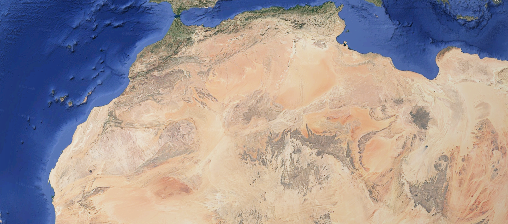

Understanding the Genomic Heterogeneity of North African Imazighen: From Broad to Microgeographical Perspectives
Vilà-Valls, L., Abdeli, A., Lucas-Sánchez, M., Bekada, A., Calafell, F., Benhassine, T., & Comas, D. (2024). Scientific Reports, 14(1), 9979.
Summary
This study from the Universitat Pompeu Fabra presents the most comprehensive genomic survey of North African Imazighen (Amazigh/Berber) populations published to date. The researchers assembled a dataset spanning multiple Amazigh-speaking groups from Morocco, Algeria, and the Saharan fringe, comparing broad regional patterns with fine-grained microgeographical structure within individual communities.
Applying principal component analysis (PCA), ADMIXTURE clustering, runs-of-homozygosity (ROH) analysis, and identity-by-descent (IBD) comparisons, the team reconstructed a layered picture of Amazigh population history. The deepest layer of Amazigh ancestry links directly to the 15,100–13,900-year-old Epipalaeolithic Iberomaurusian foragers from Taforalt, Morocco, confirming the autochthonous and ancient character of the Imazighen gene pool.
Above this Epipaleolithic foundation, the study identified at least two subsequent admixture waves with sub-Saharan African populations: one centred around the 12th century CE, likely associated with trans-Saharan trade networks and the slave trade, and a second wave around the 19th century CE. The proportions and geographic distribution of sub-Saharan ancestry differ markedly between Amazigh groups depending on their proximity to trans-Saharan routes. The study also found evidence for negative assortative mating as the dominant mating pattern, with endogamy restricted to small isolated sub-groups.
Study Region
Key Takeaways
- Largest Amazigh genomic dataset compiled to date, covering multiple Moroccan and Algerian Imazighen communities at both regional and microgeographical scales
- The deepest Amazigh ancestry layer traces back to Iberomaurusian foragers at Taforalt, Morocco (~15,100–13,900 years ago), confirming Epipaleolithic roots
- Two identifiable waves of sub-Saharan African admixture: approximately the 12th century CE (trans-Saharan trade era) and approximately the 19th century CE
- Sub-Saharan ancestry proportions vary substantially between Amazigh groups, correlating with historical proximity to trans-Saharan caravan routes
- Negative assortative mating predominates; strict endogamy is rare and found only in highly isolated sub-groups, shaping local genetic profiles
- Amazigh populations show high internal diversity at the microgeographical scale, reinforcing that “Amazigh” is not genetically monolithic but a culturally and linguistically defined umbrella for diverse communities
Relevance to Our Lineage
This study is directly relevant to interpreting the genetic context of the Chtouka lineage from the Souss-Massa. The confirmation that Moroccan Amazigh populations maintain a deep Epipalaeolithic ancestry layer, anchored to the Iberomaurusian horizon at Taforalt, places the Anti-Atlas Aït M’Hend lineage within the broader autochthonous North African genetic continuum discussed on our Lineage History page.
The identification of two historically datable trans-Saharan admixture waves is also significant for our Genetics analysis. Small proportions of sub-Saharan African ancestry detectable in modern Moroccan Amazigh genomes are now traceable to specific historical periods (12th and 19th centuries CE) rather than ancient or poorly defined processes—providing a calibrated timeline for interpreting admixture signals in personal genomic results from the Souss-Massa region.
The finding of high microgeographical diversity within Amazigh groups also cautions against over-generalising “North African Amazigh” as a uniform genetic category. The Chtouka lineage of the Anti-Atlas belongs to a regional sub-population whose specific admixture profile may differ meaningfully from Amazigh groups in the Rif, Kabylie, or the Saharan fringe.
Related Reading
Follow Future Summaries
For occasional updates on newly published research pages, subscribe on the contact page.
Subscribe to Updates